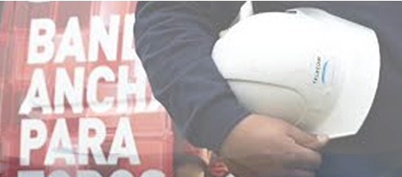
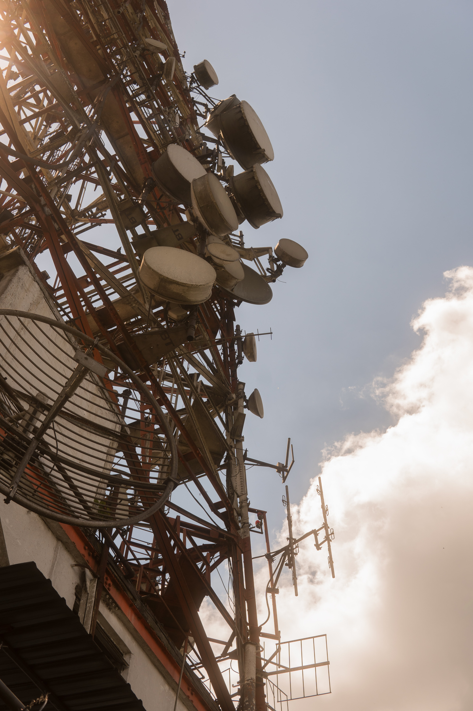

Portal Tecnico
Daños Actuales
Tratamiento de OT ▼
Zona Peligrosa
Cambio de Poste
Cambio de ter
Info RG y Equipos
Herramientas
SECCION PRINCIPAL

CURSOS
Cursos
HERRAMIENTAS
Herramientas

APLICACIONES
Aplicaciones